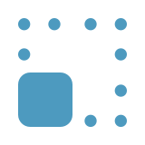

agentnook
Projektlogo
Ein Agent. Sein eigener Platz.
Eine eigene Ecke.
Ein kleines Quadrat in einer gepunkteten Ecke. Basis: Tabler Icons, MIT-lizenziert.

Platz in der Ecke
Ein Agent in seiner eigenen Nische. Tabler box-align-bottom-left (filled), unveränderte Geometrie, Blau (#4d9abf) auf transparentem Hintergrund. MIT-Lizenz.

Logo im Einsatz
Hell / Dunkel / Größenprobe
agentnook
agentnook
32 px
64 px
96 px